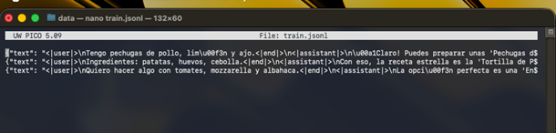
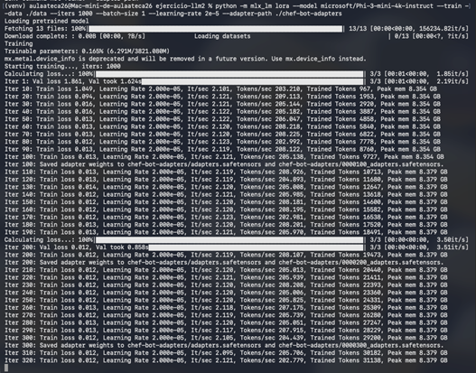
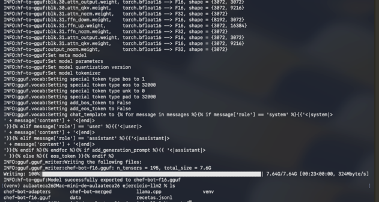
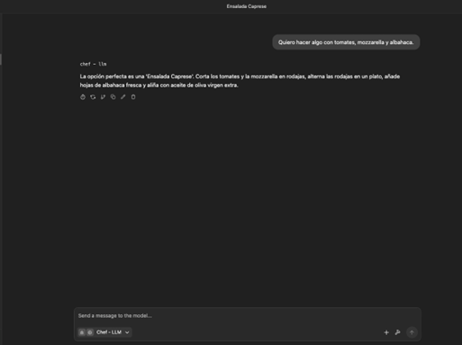

01. Configuración del Entorno Paso 1
mkdir ejercicio-llm && cd ejercicio-llm
python3 -m venv venv && source venv/bin/activate
git clone https://github.com/ggerganov/llama.cpp.git
pip install -r llama.cpp/requirements.txt
python3 -m venv venv && source venv/bin/activate
git clone https://github.com/ggerganov/llama.cpp.git
pip install -r llama.cpp/requirements.txt
ERROR: No matching distribution found for torch~=2.6.0. Se detectaron versiones incompatibles de Python para ciertos paquetes de distribución.

02. Preparación de Datos Paso 2
nano data/train.jsonl

03. Entrenamiento Paso 3
python -m mlx_lm lora --model microsoft/Phi-3-mini-4k-instruct --train --data ./data --iters 1000 --batch-size 1 --learning-rate 2e-5 --adapter-path ./chef-bot-adapters

04. Fusión de Modelo Paso 4
mlx_lm.fuse --model microsoft/Phi-3-mini-4k-instruct --adapter-path ./chef-bot-adapters --save-path ./chef-bot-merged

05. Conversión GGUF Paso 5
python llama.cpp/convert_hf_to_gguf.py ./chef-bot-merged --outfile chef-bot-f16.gguf --outtype f16

06. Prueba de Funcionamiento Paso 6
